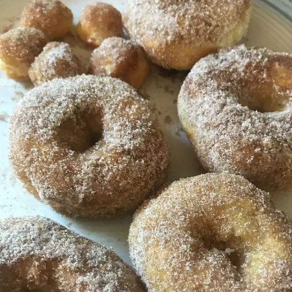

Air Fryer Cinnamon-Sugar Doughnuts
home
Recipes

If you have been looking for a healthier way of making doughnuts, this recipe is for you. Air-fried and dusted in cinnamon-sugar or dipped in a glaze--all the flavors are there, but the calories of frying are not!
Ingredients
¼ cup butter, melted
½ cup white sugar
¼ cup brown sugar
1 teaspoon ground cinnamon
¼ teaspoon ground nutmeg (Optional)
1 (16.3 ounce) package refrigerated flaky biscuit dough (such as Pillsbury™ Grands!™ Flaky Layers)
Steps
- Place melted butter in a bowl. Combine white sugar, brown sugar, cinnamon and nutmeg in a second bowl.
- Separate biscuit dough into individual biscuits and cut out the centers using a biscuit cutter (or the bottom of a piping tip) to create a doughnut shape. Place doughnuts in the air fryer basket.
- Air fry at 350 degrees F (175 degrees C) until golden brown, 4 to 6 minutes. Flip doughnuts and cook an additional 1 to 3 minutes.
- Remove doughnuts from air fryer. Dip each doughnut into melted butter (making sure to coat top, bottom, and sides), followed by sugar-cinnamon mixture until completed coated. Serve immediately.